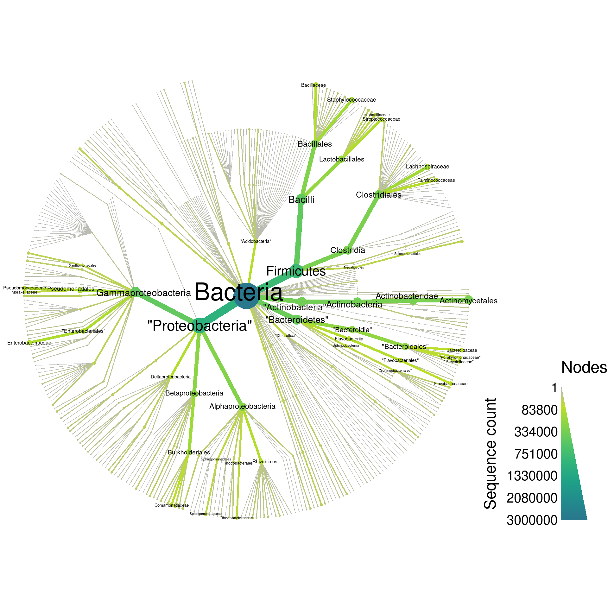
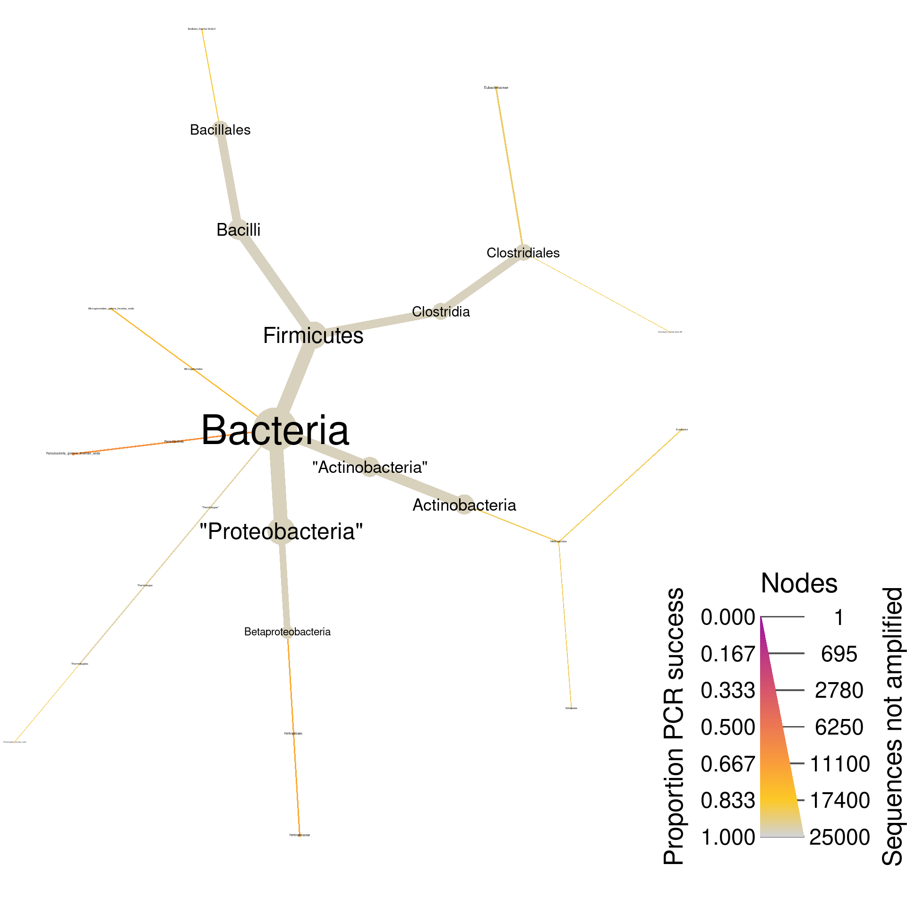

Digital PCR with the RDP database
Requirements
NOTE: This analysis requires at least 10Gb of RAM to run. It uses large files not included in the repository and many steps can take a few minutes to run.
Parameters
Analysis input/output
input_folder <- "raw_input" # Where all the large input files are. Ignored by git.
output_folder <- "results" # Where plots will be saved
output_format <- "pdf" # The file format of saved plots
pub_fig_folder <- "publication"
revision_n <- 1
result_path <- function(name) {
file.path(output_folder, paste0(name, ".", output_format))
}
save_publication_fig <- function(name, figure_number) {
file.path(result_path(name), paste0("revision_", revision_n), paste0("figure_", figure_number, "--", name, ".", output_format))
}Analysis parameters
These settings are shared between the RDP, SILVA, and Greengenes analyses, since the results of those three analyeses are combined in one plot later. This ensures that all of the graphs use the same color and size scales, instead of optimizing them for each data set, as would be done automatically otherwise.
size_range <- c(0.0004, 0.015) # The size range of nodes
label_size_range <- c(0.002, 0.05) # The size range of labels
all_size_interval <- c(1, 3000000) # The range of read counts to display in the whole database plots
pcr_size_interval <- c(1, 25000) # The range of read counts to display in the PCR plots
label_max <- 50 # The maximum number of labels to show on each graph
max_taxonomy_depth <- 4 # The maximum number of taxonomic ranks to show
min_seq_count <- NULL # The minimum number of sequeces need to show a taxon.
just_bacteria <- TRUE # If TRUE, only show bacterial taxa
max_mismatch <- 10 # Percentage mismatch tolerated in pcr
pcr_success_cutoff <- 0.90 # Any taxon with a greater proportion of PCR sucess will be excluded from the PCR plots
min_seq_length <- 1200 # Use to encourage full length sequences
forward_primer = c("515F" = "GTGYCAGCMGCCGCGGTAA")
reverse_primer = c("806R" = "GGACTACNVGGGTWTCTAAT")
pcr_success_color_scale = c(viridis::plasma(10)[4:9], "lightgrey")Parse database
The code below parses and subsets the entire RDP non-redundant reference database (Maidak et al. 2001). The input file is not included in this repository because it is 3.6GB, but you can download it from the RDP website here:
https://rdp.cme.msu.edu/misc/resources.jsp
rdp_seq <- ape::read.FASTA(file.path(input_folder, "rdp_current_Bacteria_unaligned.fa"))
rdp <- extract_tax_data(names(rdp_seq),
regex = "\\tLineage(.*)",
key = c("class"),
class_regex = "[;=](.+?);(.+?)",
class_key = c("taxon_name", rdp_rank = "taxon_rank"))
# rdp_seq <- unlist(lapply(as.character(rdp_seq), paste0, collapse = ""))
rdp$data$sequence <- setNames(rdp_seq, rdp$data$tax_data$taxon_id)
rdp$data$class_data <- NULL
print(rdp)## <Taxmap>
## 2614 taxa: aab. Root, aac. Bacteria ... dwn. Rubrobacter, dwo. Sphaerobacter
## 2614 edges: NA->aab, aab->aac, aac->aad, aac->aae ... dkk->dwm, dkn->dwn, dkw->dwo
## 2 data sets:
## tax_data:
## # A tibble: 3,070,243 x 2
## taxon_id input
## <chr> <chr>
## 1 dlq "\tLineage=Root;rootrank;Bacteria;domain;\"Actinobacteria\";phylum;Actin…
## 2 dlq "\tLineage=Root;rootrank;Bacteria;domain;\"Actinobacteria\";phylum;Actin…
## 3 dlq "\tLineage=Root;rootrank;Bacteria;domain;\"Actinobacteria\";phylum;Actin…
## # … with 3,070,240 more rows
## sequence:
## 3070243 DNA sequences in binary format stored in a list.
##
## Mean sequence length: 1042.096
## Shortest sequence: 400
## Longest sequence: 2922
##
## Labels:
## dlq
## dlq
## dlq
## dlq
## dlq
## dlq
## ...
##
## More than 10 million bases: not printing base composition.
## (Total: 3.2 Gb)
## 0 functions:
Subset
Next I will subset the taxa in the dataset (depending on parameter settings). This can help make the graphs less cluttered and make it easier to compare databases.
if (! is.null(min_seq_count)) {
rdp <- filter_taxa(rdp, n_obs >= min_seq_count)
}
if (just_bacteria) {
rdp <- filter_taxa(rdp, taxon_names == "Bacteria", subtaxa = TRUE)
}
if (! is.null(max_taxonomy_depth)) {
rdp <- filter_taxa(rdp, n_supertaxa <= max_taxonomy_depth)
}
print(rdp)## <Taxmap>
## 667 taxa: aac. Bacteria, aad. "Actinobacteria" ... azs. Nitrospinaceae
## 667 edges: NA->aac, aac->aad, aac->aae, aac->aaf ... anl->azq, anm->azr, ann->azs
## 2 data sets:
## tax_data:
## # A tibble: 3,070,243 x 2
## taxon_id input
## <chr> <chr>
## 1 ano "\tLineage=Root;rootrank;Bacteria;domain;\"Actinobacteria\";phylum;Actin…
## 2 ano "\tLineage=Root;rootrank;Bacteria;domain;\"Actinobacteria\";phylum;Actin…
## 3 ano "\tLineage=Root;rootrank;Bacteria;domain;\"Actinobacteria\";phylum;Actin…
## # … with 3,070,240 more rows
## sequence:
## 3070243 DNA sequences in binary format stored in a list.
##
## Mean sequence length: 1042.096
## Shortest sequence: 400
## Longest sequence: 2922
##
## Labels:
## ano
## ano
## ano
## ano
## ano
## ano
## ...
##
## More than 10 million bases: not printing base composition.
## (Total: 3.2 Gb)
## 0 functions:
Remove chloroplast sequences
These are not bacterial and will bias the digital PCR results. Note that the invert option makes it so taxa are included that did not pass the filter. This is different than simply using name != "Chloroplast", subtaxa = TRUE since the effects of invert are applied after those of subtaxa.
rdp <- filter_taxa(rdp, taxon_names == "Cyanobacteria/Chloroplast", subtaxa = TRUE, invert = TRUE)
print(rdp)## <Taxmap>
## 629 taxa: aac. Bacteria, aad. "Actinobacteria" ... azs. Nitrospinaceae
## 629 edges: NA->aac, aac->aad, aac->aae, aac->aaf ... amx->ayv, anm->azr, ann->azs
## 2 data sets:
## tax_data:
## # A tibble: 3,070,243 x 2
## taxon_id input
## <chr> <chr>
## 1 ano "\tLineage=Root;rootrank;Bacteria;domain;\"Actinobacteria\";phylum;Actin…
## 2 ano "\tLineage=Root;rootrank;Bacteria;domain;\"Actinobacteria\";phylum;Actin…
## 3 ano "\tLineage=Root;rootrank;Bacteria;domain;\"Actinobacteria\";phylum;Actin…
## # … with 3,070,240 more rows
## sequence:
## 3070243 DNA sequences in binary format stored in a list.
##
## Mean sequence length: 1042.096
## Shortest sequence: 400
## Longest sequence: 2922
##
## Labels:
## ano
## ano
## ano
## ano
## ano
## ano
## ...
##
## More than 10 million bases: not printing base composition.
## (Total: 3.2 Gb)
## 0 functions:
Plot whole database
Although graphing everything can be a bit overwhelming ( taxa), it gives an intuitive feel for the complexity of the database:
rdp_plot_all <- heat_tree(rdp,
node_size = n_obs,
node_color = n_obs,
node_size_range = size_range * 2,
edge_size_range = size_range,
node_size_interval = all_size_interval,
edge_size_interval = all_size_interval,
node_color_interval = all_size_interval,
edge_color_interval = all_size_interval,
node_label = taxon_names,
node_label_size_range = label_size_range,
node_label_max = label_max,
node_color_axis_label = "Sequence count",
output_file = result_path("rdp--all"))
print(rdp_plot_all)
PCR
Before doing the digital PCR, I will filter for only full length sequences, since shorter sequences might not have a primer binding site and the digital PCR would fail, not because of an inability of a real primer to bind to real DNA, but because of missing sequence information in the database. Ideally, this kind of filtering for full length sequences would involve something like a multiple sequences alignment so we don’t remove sequences that are actually full length, but just happen to be shorter than the cutoff of 1200 naturally. However, this method is easy and should work OK.
if (! is.null(min_seq_length)) {
long_enough <- which(vapply(rdp$data$sequence, length, numeric(1)) >= min_seq_length)
rdp <- filter_obs(rdp, "sequence", long_enough)
rdp <- filter_obs(rdp, "tax_data", long_enough, drop_taxa = TRUE)
}
print(rdp)## <Taxmap>
## 619 taxa: aac. Bacteria, aad. "Actinobacteria" ... azs. Nitrospinaceae
## 619 edges: NA->aac, aac->aad, aac->aae, aac->aaf ... amx->ayv, anm->azr, ann->azs
## 2 data sets:
## tax_data:
## # A tibble: 1,516,302 x 2
## taxon_id input
## <chr> <chr>
## 1 ano "\tLineage=Root;rootrank;Bacteria;domain;\"Actinobacteria\";phylum;Actin…
## 2 ano "\tLineage=Root;rootrank;Bacteria;domain;\"Actinobacteria\";phylum;Actin…
## 3 ano "\tLineage=Root;rootrank;Bacteria;domain;\"Actinobacteria\";phylum;Actin…
## # … with 1,516,299 more rows
## sequence:
## 1516302 DNA sequences in binary format stored in a list.
##
## Mean sequence length: 1400.489
## Shortest sequence: 1200
## Longest sequence: 2922
##
## Labels:
## ano
## ano
## ano
## ano
## ano
## ano
## ...
##
## More than 10 million bases: not printing base composition.
## (Total: 2.12 Gb)
## 0 functions:
Next I will conduct digital PCR with a new set of universal 16S primers (Walters et al. 2016), allowing for a maximum mismatch of 10%.
rdp_pcr <- primersearch(rdp, sequence,
forward = forward_primer,
reverse = reverse_primer,
mismatch = max_mismatch)Now the object rdp_pcr has all the information that rdp has plus the results of the digital PCR. Lets plot the whole database again, but coloring based on digital PCR success.
rdp_plot_pcr_all <- heat_tree(rdp_pcr,
node_size = seq_count,
node_size_range = size_range * 2,
edge_size_range = size_range,
node_size_interval = all_size_interval,
edge_size_interval = all_size_interval,
node_label = taxon_names,
node_color = prop_amplified,
node_color_range = pcr_success_color_scale,
node_color_trans = "linear",
node_label_size_range = label_size_range,
node_label_max = label_max,
edge_color_interval = c(0, 1),
node_color_interval = c(0, 1),
node_color_axis_label = "Proportion PCR success",
node_size_axis_label = "Sequence count",
output_file = result_path("rdp--pcr_all"))
print(rdp_plot_pcr_all)
Since these are universal bacterial primers, we would expect most of the database to amplify. The plot shows this and very few sequences were not amplified. If we wanted to look at only those sequences that did not amplify, we could filter taxa by PCR success and plot what remains. I am including the supertaxa of those taxa that did not amplify since excluding them would split the tree into a cloud of fragments lacking taxonomic context.
rdp_plot_pcr_fail <- rdp_pcr %>%
filter_taxa(prop_amplified < pcr_success_cutoff, supertaxa = TRUE) %>%
heat_tree(node_size = query_count - seq_count,
node_label = taxon_names,
node_color = prop_amplified,
node_size_range = size_range * 2,
edge_size_range = size_range,
node_size_interval = pcr_size_interval,
edge_size_interval = pcr_size_interval,
node_color_range = pcr_success_color_scale,
node_color_trans = "linear",
node_color_interval = c(0, 1),
edge_color_interval = c(0, 1),
node_label_size_range = label_size_range,
node_label_max = label_max,
node_color_axis_label = "Proportion PCR success",
node_size_axis_label = "Sequences not amplified",
output_file = result_path("rdp--pcr_fail"))
print(rdp_plot_pcr_fail)
Save outputs for composite figure
Some results from this file will be combined with others from similar analyses to make a composite figure. Below, the needed objects are saved so that they can be loaded by another Rmd file.
Software and packages used
## R version 4.0.3 (2020-10-10)
## Platform: x86_64-pc-linux-gnu (64-bit)
## Running under: Pop!_OS 20.04 LTS
##
## Matrix products: default
## BLAS: /usr/lib/x86_64-linux-gnu/blas/libblas.so.3.9.0
## LAPACK: /usr/lib/x86_64-linux-gnu/lapack/liblapack.so.3.9.0
##
## locale:
## [1] LC_CTYPE=en_US.UTF-8 LC_NUMERIC=C LC_TIME=en_US.UTF-8
## [4] LC_COLLATE=en_US.UTF-8 LC_MONETARY=en_US.UTF-8 LC_MESSAGES=en_US.UTF-8
## [7] LC_PAPER=en_US.UTF-8 LC_NAME=C LC_ADDRESS=C
## [10] LC_TELEPHONE=C LC_MEASUREMENT=en_US.UTF-8 LC_IDENTIFICATION=C
##
## attached base packages:
## [1] stats graphics grDevices utils datasets methods base
##
## other attached packages:
## [1] metacoder_0.3.5 stringr_1.4.0 glossary_0.1.0 knitcitations_1.0.12
## [5] knitr_1.30
##
## loaded via a namespace (and not attached):
## [1] progress_1.2.2 tidyselect_1.1.0 xfun_0.19 purrr_0.3.4 lattice_0.20-41
## [6] colorspace_1.4-1 vctrs_0.3.4 generics_0.1.0 htmltools_0.5.1.1 viridisLite_0.3.0
## [11] yaml_2.2.1 utf8_1.1.4 rlang_0.4.10 pillar_1.4.6 glue_1.4.2
## [16] lifecycle_0.2.0 plyr_1.8.6 ggfittext_0.9.0 munsell_0.5.0 gtable_0.3.0
## [21] codetools_0.2-16 evaluate_0.14 labeling_0.4.2 parallel_4.0.3 fansi_0.4.1
## [26] Rcpp_1.0.5 readr_1.4.0 scales_1.1.1 jsonlite_1.7.1 farver_2.0.3
## [31] gridExtra_2.3 ggplot2_3.3.2 hms_0.5.3 digest_0.6.27 stringi_1.5.3
## [36] dplyr_1.0.2 ade4_1.7-16 grid_4.0.3 bibtex_0.4.2.3 cli_2.1.0
## [41] tools_4.0.3 magrittr_2.0.1 lazyeval_0.2.2 tibble_3.0.4 RefManageR_1.2.12
## [46] crayon_1.3.4 ape_5.4-1 seqinr_4.2-4 pkgconfig_2.0.3 MASS_7.3-53
## [51] ellipsis_0.3.1 prettyunits_1.1.1 xml2_1.3.2 lubridate_1.7.9 assertthat_0.2.1
## [56] rmarkdown_2.5 httr_1.4.2 viridis_0.5.1 R6_2.5.0 igraph_1.2.6
## [61] nlme_3.1-149 compiler_4.0.3
References
Maidak, Bonnie L, James R Cole, Timothy G Lilburn, Charles T Parker Jr, Paul R Saxman, Ryan J Farris, George M Garrity, Gary J Olsen, Thomas M Schmidt, and James M Tiedje. 2001. “The Rdp-Ii (Ribosomal Database Project).” Nucleic Acids Research 29 (1): 173–74.
Walters, William, Embriette R Hyde, Donna Berg-Lyons, Gail Ackermann, Greg Humphrey, Alma Parada, Jack A Gilbert, et al. 2016. “Improved Bacterial 16S rRNA Gene (V4 and V4-5) and Fungal Internal Transcribed Spacer Marker Gene Primers for Microbial Community Surveys.” mSystems 1 (1): e00009–15.